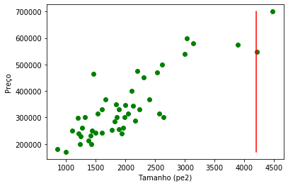
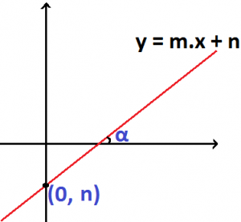
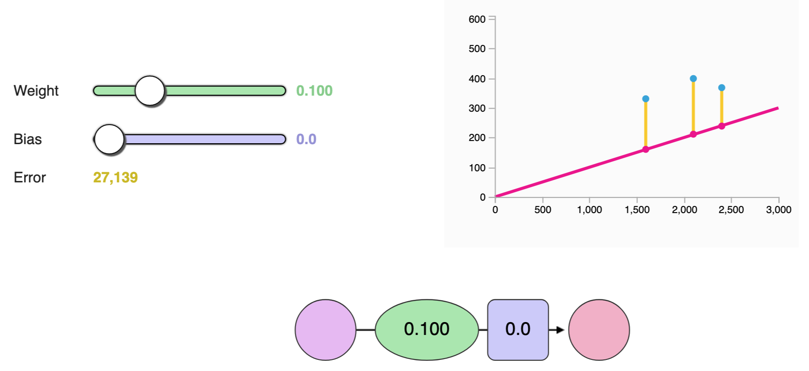
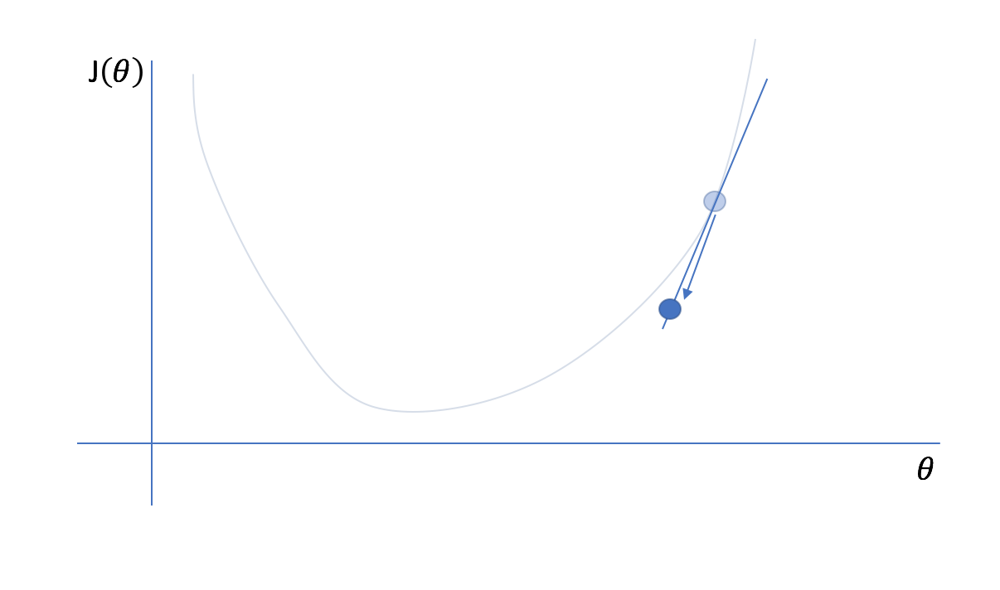
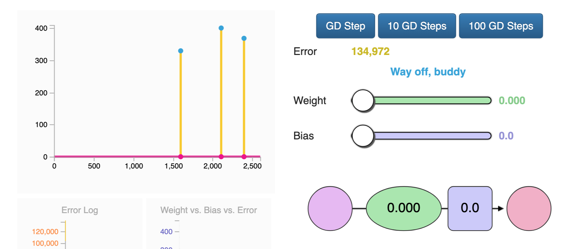
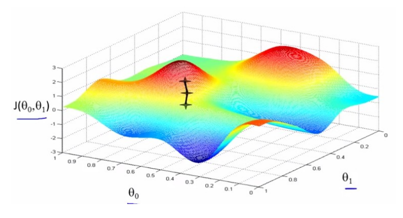
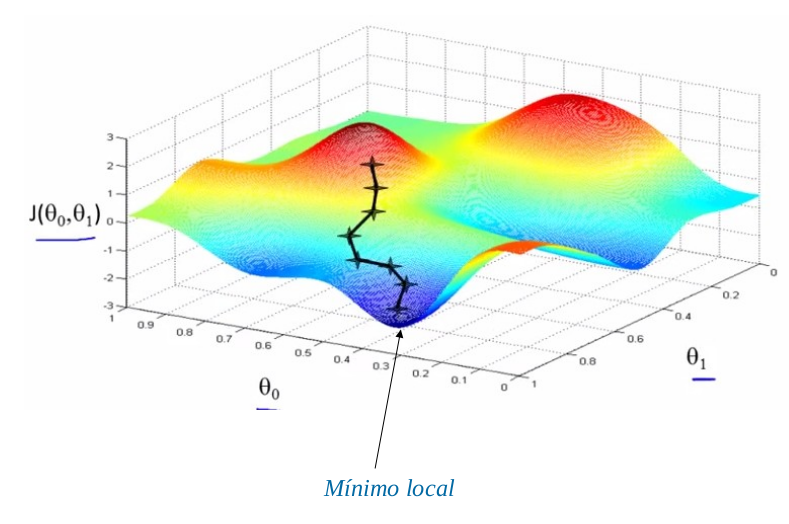
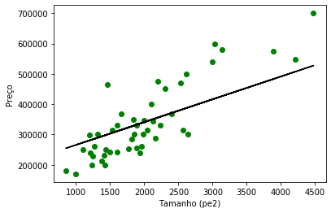
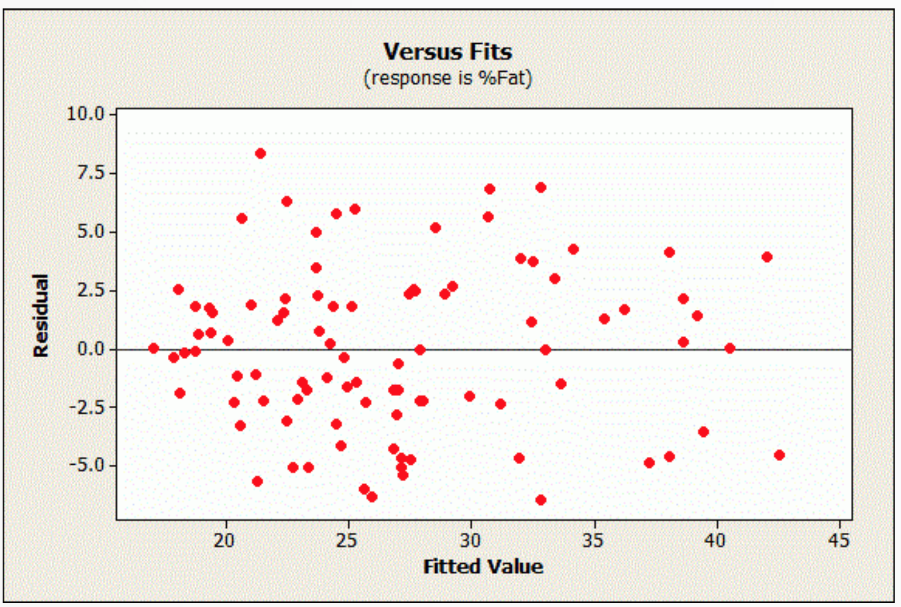
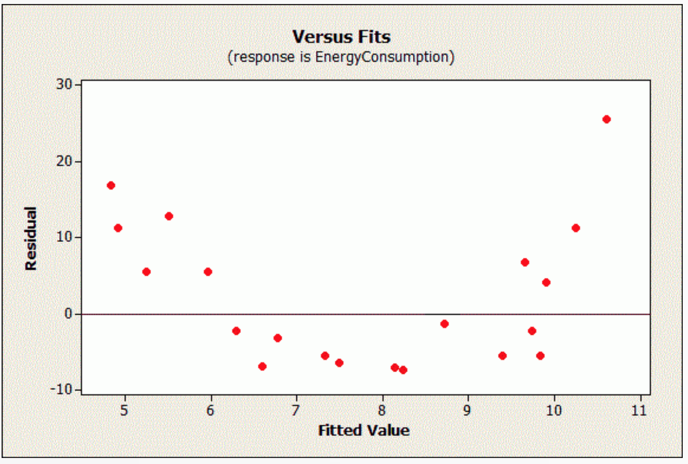

Introduction to Linear Regression
@raphaelmcobe
### Regression: Definition #### Regression: What is it? - Attempts to <span class="highlight">predict</span> numerical values directly <span class="highlight">from attributes</span> of a new example. #### Examples - <span class="highlight">Predicting</span> tomorrow's temperature <span class="highlight">from</span> atmospheric conditions. - <span class="highlight">Estimating</span> the price of a house <span class="highlight">from</span> its size. -- ### More Formally...... #### Problem definition - Approximating a quantitative variable $Y \in \mathbb{R}$ (<span class="highlight">response</span>) - From predictor variables $X_1, \dots, X_n \in \mathbb{R}$ - When $n = 1$: Simple or univariate regression - When $n>1$: Multivariate regression - <span class="highlight">Objective:</span> Find the function $h$ (<span class="highlight">hypothesis</span>): $$Y \approx h(X_1, \dots, X_n)$$ -- ### Strategy: - Using a set of examples (<span class="highlight">dataset</span>) where the correct response is known to "learn" a model. -- ### Learning the Model #### Ideally, the algorithm to learn the model should: - Be able to reconstruct the modeled phenomenon with the highest possible precision (except for a quantifiable error) - Require as little data as possible for learning - Represent the model in the simplest possible way (Occam's Razor) - There is no "correct answer" for all problems - There are many types of models (linear models, trees, neural networks, etc.) -- <!-- .slide: data-background="#ffffff" --> Sales volume as a function of advertising budget in different media <div style="text-align: center;"> <img src="img/venda_por_verba_exemplo.png"/> </div> --- <!-- .slide: data-background="#ffffff" --> Income as a function of schooling <div style="text-align: center;"> <img src="img/renda_por_escolaridade_exemplo.png"/> </div> -- #### The training set can be visualized as a table | Size in ft² | Price ($) in 1000's | |-------------|---------------------| | 2104 | 460 | | 1416 | 232 | | 1534 | 315 | | 852 | 178 | | ... | ... | -- <!-- .slide: data-background="#ffffff" --> <div style="text-align: center;"> <img src="img/preco_por_tamanho_exemplo.png"/> </div> --- <!-- .slide: data-background="#6d8ba7" --> ## K-Nearest Neighbors Regression -- ### KNN Regression (<span class="highlight">K-Nearest Neighbors</span>) - $Y$ can be estimated based on the $k$ closest examples in the training set. $$h_{K}(\boldsymbol{x}) = \sum_{j \in \mathcal{N}_K} w_j(\boldsymbol{x},\boldsymbol{x}^j) y^j$$ - Where $K$ is the number of neighbors, $\mathcal{N}_K$ is the set of samples present in the $K$-neighborhood, and $w_j$ is the weight of $\boldsymbol{x}$ in relation to $\boldsymbol{x}^j$ -- - Assuming all samples have the same weight: $$h_{K}(\boldsymbol{x}) = \frac{1}{K} \sum_{j \in \mathcal{N}_K} y^j$$ - No training process is required -- <!-- .slide: data-background="#ffffff" --> <div style="text-align: center;"> <img src="img/data_portland.png"/> </div> -- <!-- .slide: data-background="#ffffff" --> #### Imagine we want to predict the price of a house with size = $4200$ <div style="text-align: center;">  </div> -- <!-- .slide: data-background="#ffffff" --> #### If $K=3$, we must find the 3 examples closest to the desired value <div style="text-align: center;"> <img src="img/knn_exemplo2.png"/> </div> -- #### The predicted value is defined as the average of these values $$Y = \frac{1}{3} (699900 + 573900 + 549000) = 607600$$ -- <!-- .slide: data-background="#ffffff" --> <div style="text-align: center;"> <img src="img/knn_exemplo3.png"/> </div> -- ### Required Parameters for KNN 1. $K \rightarrow$ number of neighbors 1. A distance metric to find the "nearest" neighbors 1. A way to define the weight for each example -- <!-- .slide: data-background="#ffffff" --> ### Examples of models learned with KNN <div style="text-align: center;"> <img src="img/knn_result_k3.png"/> </div> $K=3$ -- <!-- .slide: data-background="#ffffff" --> <div style="text-align: center;"> <img src="img/knn_result_k10.png"/> </div> $K=10$ -- #### Advantages - The learned model does not need to be linear - No training phase - Few parameters to define <br /><br /> #### Disadvantages - Very costly inference process - Sensitivity to noise and scale --- <!-- .slide: data-background="#6d8ba7" --> ## Univariate Linear Regression --- ### Linear Regression #### Case: Only one feature $$Y = \theta_0 + \theta_1 X $$ $h$ is represented as a straight line: $$h(\theta) = \theta_0 + \theta_1 X$$ --- <!-- .slide: data-background="#ffffff" --> #### Equation of the Line: $$y = mx + n$$ <div style="text-align: center;"></div> - $m$ = angular coefficient (indicates slope of the line) - $n$ = linear coefficient (<span class="highlight">intercept</span>) --- $$ y = mx + n$$ $$h(\theta; X) = \theta_0 + \theta_1 X^1$$ <span class="highlight">Objective: Find the best line ($\theta$) according to the training data</span> --- ### And what would be the <span class="highlight">best</span> line? - Find the line $h$ that passes as close as possible to all points #### Residual - Difference between the actual $Y$ value and the estimate $\widehat{Y} = h(\Theta;X)$ $$\epsilon_i = y_i - \widehat{y}_i$$ --- <!-- .slide: data-background="#ffffff" --> #### Finding the weights Manually <div style="text-align: center;"> <a href="https://jalammar.github.io/visual-interactive-guide-basics-neural-networks/\#train_your_dragon">  </a> </div> --- <!-- .slide: data-background="#ffffff" --> <div style="text-align: center;"> <img src="img/residuos_ilustracao.png"> </div> --- - One way to calculate $\theta_0$ and $\theta_1$ is to base it on the <span class="highlight">M</span>ean <span class="highlight">S</span>quared <span class="highlight">E</span>rror (MSE) $$J(\theta) = \frac{1}{2n}\sum_{i=1}^{n} \epsilon_i^2$$ --- <!-- .slide: data-background="#ffffff" --> ### Cost Function Variation #### Examine $\epsilon$ as a function of $\theta_0$ and $\theta_1$ <div style="text-align: center;"> <img src="img/funcao_custo.png"/> </div> --- ### Finding values for $\theta_0$ and $\theta_1$ #### Gradient Calculation - The gradient of a vector is a generalization of the derivative and is represented by the vector operator $\nabla$. This operation is used to minimize our cost function (<span class="highlight">MSE</span>): - Ordinary Least Squares Method --- ### Finding values for $\theta_0$ and $\theta_1$ #### The problem with the analytical solution - The analytical solution in its vector representation has the form: $$ \Theta = (X^T X)^{-1} X^T Y $$ - Disadvantages of using the analytical solution: - $X^T X$ is not always invertible; - The complexity of calculating the inverse is on the order of $O(n^3)$: - If the number of features is high, it can become <span class="highlight">computationally expensive</span>; - Very high memory consumption --- ### Finding values for $\theta_0$ and $\theta_1$ #### Inverse calculation - Imagine a dataset containing $10^5$ features and $10^6$ observations. In this case, $X^T X$ would have $10^5\times10^5$ floating points, which, at 8 bytes per number, would yield <span class="highlight">80 gigabytes</span>. The inverse calculation should then consume on the order of $O(n^3)$ (<span class="highlight">80 quilo yottabytes!!!</span>); --- ### Finding values for $\theta_0$ and $\theta_1$ #### Gradient Descent Technique - Iterative calculation of the $\Theta$ matrix with: $$\theta_0^{(t+1)} = \theta_0^{(t)} - \alpha \frac{\partial MSE}{\partial \theta_0}$$ $$\theta_1^{(t+1)} = \theta_1^{(t)} - \alpha \frac{\partial MSE}{\partial \theta_1}$$ - Where $\alpha$ is the Learning Rate, i.e., the size of the step towards the minimum cost value; --- <!-- .slide: data-background="#ffffff" --> <div style="text-align: center;"> <img src="img/gradient_descent1.png"/> </div> --- <!-- .slide: data-background="#ffffff" --> <div style="text-align: center;"> <img src="img/gradient_descent2.png"/> </div> --- <!-- .slide: data-background="#ffffff" --> <div style="text-align: center;">  </div> --- <!-- .slide: data-background="#ffffff" --> <div style="text-align: center;"> <img src="img/gradient_descent4.png"/> </div> --- <!-- .slide: data-background="#ffffff" --> <div style="text-align: center;"> <img src="img/gradient_descent5.png"/> </div> --- <!-- .slide: data-background="#ffffff" --> #### Visualizing Gradient Descent in Action <div style="text-align: center;"> <a href="https://jalammar.github.io/visual-interactive-guide-basics-neural-networks/\#automation"></a> </div> --- <!-- .slide: data-background="#ffffff" --> ### Performance Evaluation #### How to know if the result was good? <div style="text-align: center;"> <img src="img/exemplo_reta.png"/> </div> --- <!-- .slide: data-background="#ffffff" --> ### Regression Evaluation #### MSE itself can be used <div style="text-align: center;"> <img src="img/reta_aprendida.png"/> <img src="img/reta_random.png"/> </div> * Modelo 1: MSE = 1.93 × 1011 * Modelo 2: MSE = 3.28 × 1011 --- ### R$^2$ Statistic - Measures the proportion of $Y$'s variability that can be explained by $X$. $$TSS = \sum_{j}(y^j - \bar{y})^2 $$ $$RSS = \sum_{j}(y^j - \widehat{y})^2$$ $$R^2 = \frac{TSS - RSS}{TSS}$$ --- <!-- .slide: data-background="#ffffff" --> <div style="text-align: center;"> <img src="img/reta_aprendida.png"> <img src="img/reta_random.png"> </div> * Modelo 1: $R^2$ = 0.63 * Modelo 2: $R^2$ = 0.54 --- <!-- .slide: data-background="#6d8ba7" --> ### Hands-on Exercises --- <!-- .slide: data-background="#6d8ba7" --> ## Linear Regression ### Multivariate Regression --- - In most practical problems, using only one attribute <span class="highlight">is not enough</span> to estimate the response - In this case, Linear Regression must estimate a Hyperplane as model $h$. --- ### Linear Regression with Multiple Variables $$Y = h(\Theta;X) = \theta_0 + \theta_1 X_1 + \dots + \theta_{n} X_{n}$$ --- | Size in ft² | Number of rooms | Price ($) in 1000's | |-------------|------------------|----------------------| | 2104 | 3 | 460 | | 1416 | 3 | 232 | | 1534 | 3 | 315 | | 852 | 2 | 178 | | ... | | ... | --- - As in the univariate case, $\theta$ values must be chosen based on the training set - The least squares method also works for the multivariate case - Another possibility to perform learning is through the <span class="highlight">Gradient Descent</span> method --- ### Gradient Descent - Starting from the <span class="highlight">Mean Squared Error</span> cost function $$J(\theta) = \frac{1}{2m} \sum_{i=1}^{n} (y_i - h(\theta;\boldsymbol{x}_i))^2 $$ - Define parameters $\theta$ that minimize $J$ --- ### Gradient Descent Algorithm 1. Initialize $\theta$ randomly 1. Modify $\theta$ values (following the gradient), to reduce $J$ until a minimum value is reached. --- <!-- .slide: data-background="#ffffff" --> <div style="text-align: center;"> <img src="img/gradient_3d_1.png"/> </div> --- <!-- .slide: data-background="#ffffff" --> <div style="text-align: center;"> <img src="img/gradient_3d_2.png"/> </div> --- <!-- .slide: data-background="#ffffff" --> <div style="text-align: center;">  </div> --- <!-- .slide: data-background="#ffffff" --> <div style="text-align: center;">  </div> --- <!-- .slide: data-background="#ffffff" --> <div style="text-align: center;"> <img src="img/gradient_3d_5.png"/> </div> --- <!-- .slide: data-background="#ffffff" --> <div style="text-align: center;"> <img src="img/gradient_3d_6.png"/> </div> --- <!-- .slide: data-background="#ffffff" --> ### Applying Gradient Descent <div style="text-align: center;"> <img src="img/reta_gradient_descent1.png"/> </div> Repeating <span class="highlight">1</span> training iteration. $MSE = 4.2 \times 10^{12}$, $R^2 = -5.76$ --- <!-- .slide: data-background="#ffffff" --> ### Applying Gradient Descent <div style="text-align: center;">  </div> Repeating <span class="highlight">2</span> training iterations. $MSE = 2.9 \times 10^{11}$, $R^2 = -0.79$ --- <!-- .slide: data-background="#ffffff" --> ### Applying Gradient Descent <div style="text-align: center;"> <img src="img/reta_gradient_descent7.png"/> </div> Repeating <span class="highlight">7</span> training iterations. $MSE = 1.9 \times 10^{11}$, $R^2 = 0.55$ --- ## Residual Analysis -- ### Residual Analysis * The deterministic component of a regression model does such a good job at explaining the dependent variable that it leaves only the intrinsically unexplainable part of the studied phenomenon to the error; * The presence of non-randomness in the error suggests that the independent variables are not explaining everything they could. * Residual plots display the residual values on the y-axis and the predicted values on the x-axis; * If unwanted patterns appear, we cannot trust the regression coefficients—i.e., the residuals must be consistent with random error. -- ### Residual Analysis Check whether the residuals are randomly scattered around zero across the entire range of fitted values. <div style="text-align: center;">  </div> -- ### Residual Analysis When a pattern is present, it unfortunately means that some of the explanatory information has leaked into the supposedly random error. <div style="text-align: center;">  </div> --- ### Linear Regression #### Advantages - Efficient learning - Simple model to visualize and understand <br /><br /> #### Disadvantages - Many real problems are not linear --- ## Thanks! <!-- .slide: data-background="#6d8ba7" --> <br/><br/><br/><br/> #### raphaelmcobe@gmail.com #### [@raphaelmcobe](twitter.com/raphaelmcobe) #### [CODATA-RDA Data Science Schools](https://www.datascienceschools.org/)